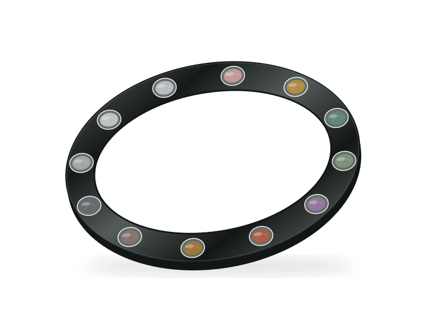
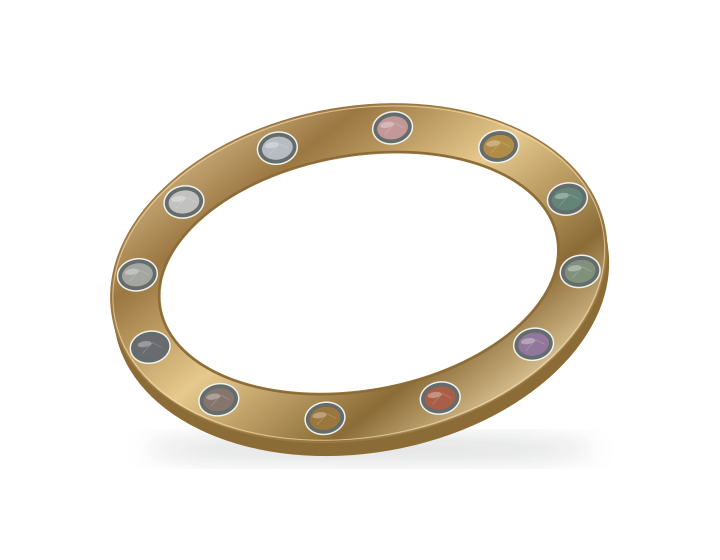

Halo I · A year, made visible
You begin.
Halo becomes.
An incomplete piece of jewelry that becomes complete through time. Twelve natural stones, earned and added one by one. One companion. A year you can hold.
See Luna grow
01 / The object
Real stone.
Considered steel.
Entirely yours.
A slim, brushed 316L stainless-steel bracelet with twelve standardized receptacles. It begins empty. The first stone is earned after one completed calendar month. Each next completed milestone month adds another, through stone twelve. Every earned stone stays.
Twelve natural gemstone modules in one shared mechanical carrier. Nearly flush settings. No electronics in the stones.
Brushed silver for Halo I.
Passive jewelry. No battery, sensors, Bluetooth or charging.
02 / One companion, through the year
Each milestone changes
both of you.
The same amber eyes. The same familiar presence. A changing silhouette, new markings and more ways to connect. Your companion’s name, personality and shared history stay with you.
Luna · Wolf · 2D evolution study. An illustration of the intended growth; expressive 3D is still in development.
A closer look
One completed month.
A noticeable change.
See what changes from one month to the next. The next stone joins your bracelet; Luna carries the chapter forward.
Bond
06
Stone of twelve
Your monthly stone
A new piece of your story.
Proposed natural stone. Color study only.
Preview only. Halo app eligibility determines when each milestone is ready.
03 / Life with Halo
A little, every day.
A change you can see.
Your daily check-ins and small commitments give the month its meaning. When a milestone is eligible, reveal its stone and meet your companion again. Then add that stone to your bracelet.
- 01
Show up today
Make a small commitment. Check in with Halo. Build the month, one day at a time.
- 02
Reach the milestone
Halo celebrates and tells you which stone is ready. Open its concealed drawer and read the message.
- 03
Scan your stone
Hold your iPhone near the stone in its drawer. In the proposed ritual, a hidden NFC inlay in the packaging opens Halo for verification.
- 04
Meet them again
Halo is designed to verify the kit, milestone, eligibility and prior activation before evolving your companion and profile. Secure activation is still in development.
- 05
Add your stone
Lift the stone, discover the second message, and mechanically lock its carrier into an empty receptacle. Every earlier stone stays.
Interaction concept. Packaging NFC, secure activation and expressive 3D evolution require prototype validation. The jewelry has no electronic press or activation mechanism.

04 / The connection
A new chapter.
The same relationship.
Your companion keeps their name, personality, memories and conversations. Each evolution adds new ways to respond to you. Earlier interactions stay. The relationship never starts over.
Your Halo profile is the authoritative earned record. The bracelet is your personal artifact. Installing an unearned stone never creates a digital milestone.
What is still being developed
The proposed NFC inlays are fixed beneath or behind each stone cradle in the packaging. There is no NFC in the bracelet or carrier. Kit verification, iPhone scan reliability, mechanical retention and expressive 3D evolution need qualification. Year One completion requires a verified full year. The eligibility schedule and secure activation service are specified but not production-implemented; the existing month-index preview must not grant milestones early. Existing app screens are demo captures, not proof of a finished activation system.
05 / Made to stay with you
Stones are permanent.
Streaks can restart.
Earned milestones and lifetime history stay. A reported lapse may restart your current consecutive streak and delay the next unearned stone. A missed check-in alone is never treated as a lapse.
Illustrative private profile · Your choice to share
7 months of journey history
5 milestones earned · Current streak: 21 days
Illustrative history after a reported lapse. Earned milestones stay; future eligibility and the final setback policy are still in development. This website does not award milestones.



Future bracelets are explorations, not production SKUs. Completed Halos remain yours; a previous year never becomes obsolete.
06 / Twelve small beginnings
A year to reveal.
A life to keep.
Twelve natural gemstone modules arrive together, each concealed in its own numbered jewelry drawer. A presentation object made to live with you for the whole year.
The object becomes your history
The case empties.
The bracelet becomes complete.
Preview the physical accumulation. Every stone already earned stays with you. Opening a future drawer or installing a stone early does not earn the digital milestone.
H A L O · I

Interactive design study. Drawer position and bracelet geometry are schematic. This preview does not change earned progress in the Halo app.
A small unboxing.
A lasting change.
When Halo says your milestone is ready, open that drawer. Read the first message. Hold the top of your iPhone near the stone while it rests in its presentation cradle. The concealed NFC inlay in the packaging returns you to Halo for verification and your companion’s next evolution.
A milestone drawer
A new piece of your story.
Hold iPhone near the stone
The NFC inlay is hidden inside this drawer.
Two messages. One new piece of you.
Lift the stone.
Find the words underneath.
A message waiting beneath your stone.
Then press the jewelry carrier into an empty receptacle and turn it through a short, deliberate movement until the mechanical lock engages. The physical gesture completes the ritual.
The proposed bayonet detent is mechanical. Locking force, wear, fit, stone retention and water/sweat durability require prototype qualification.
The technology disappears
The stone is jewelry.
The box holds the connection.
Each drawer contains its own hidden NFC inlay beneath or immediately behind the presentation cradle. Halo checks your kit, milestone, eligibility and prior activation before adding earned history.
- iPhonenear the presented stone
- Natural gemstonein its mechanical jewelry carrier
- Hidden NFC inlayfixed beneath or behind the cradle
- Presentation drawerthe inlay stays in the packaging
The twelfth stone
HALO I COMPLETE
The final drawer is empty. All twelve stones are together on your wrist. Your companion reaches its Year One evolution; your profile holds the verified year. You keep the bracelet, and everything it means.
The twelfth stone is natural opal in the current Halo I proposal: solid natural opal, never a synthetic, doublet or triplet. Sourcing, treatment disclosure and wear durability still require qualification.
The proposed material collection
Twelve natural stones.
One shared carrier geometry.
Nearly flush settings, each with its own grain and inclusions. No NFC, ferrite, battery or other electronics inside any stone or bracelet.
The circular stone studies show the proposed color sequence, not actual mineral appearance. Natural variation, treatments, sourcing and wear durability require qualification; opal needs particular care. Packaging and bracelet renders are design studies, not manufactured inventory.
07 / One complete Halo
One bracelet.
Twelve genuine stones.
One companion.
One year.
- 1 passive brushed silver 316L bracelet with 12 receptacles
- 12 real natural gemstones in standardized mechanical carriers
- 12 individually concealed jewelry drawers
- 12 hidden NFC inlays, fixed inside the packaging
- Halo app verification, companion and profile evolution
- Earned stones and history that remain yours
Halo I
One year.
The complete system. Brushed silver. In development.
Halo I · Brushed silver 316L stainless steel
Pricing and delivery are not yet confirmed.
Join for Halo updates. No payment is collected and no order is placed. Halo I is in development; pricing and delivery remain unconfirmed.
Time, memory, continuity.
You change.
They change.
You grow together.
Explore your Halo Hardware, packaging and companion evolution are in development.